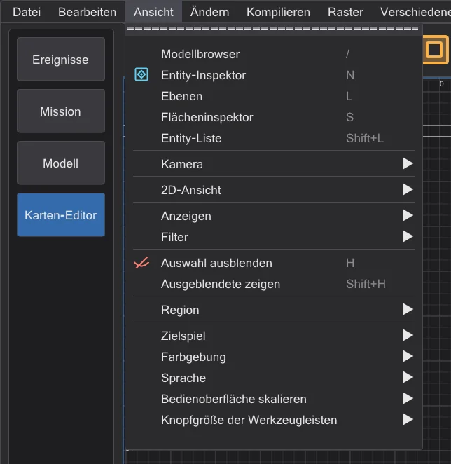
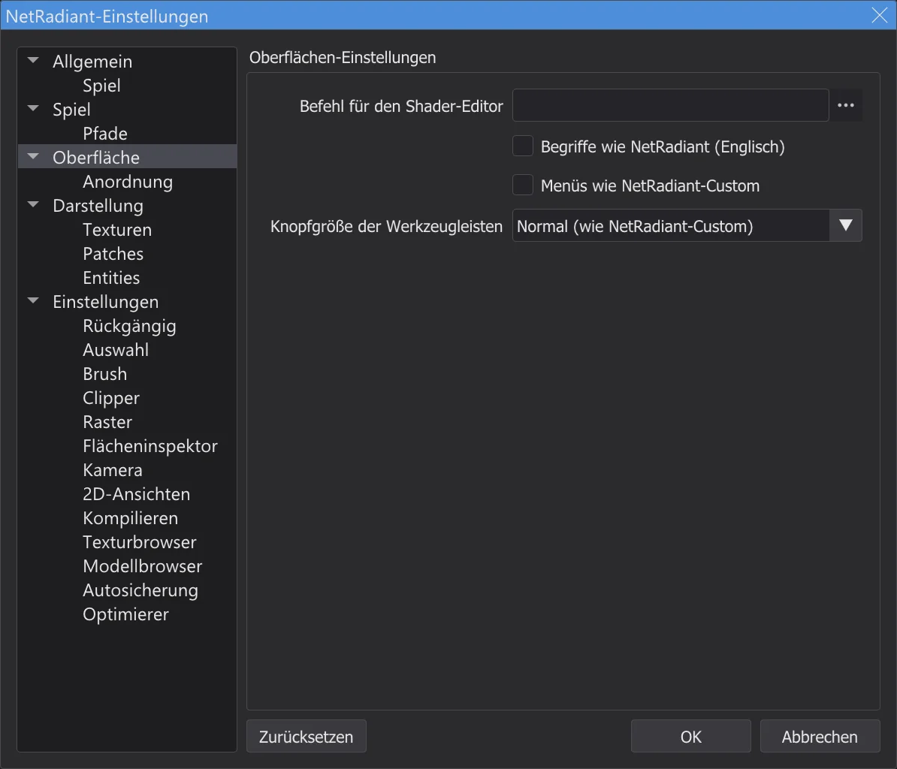
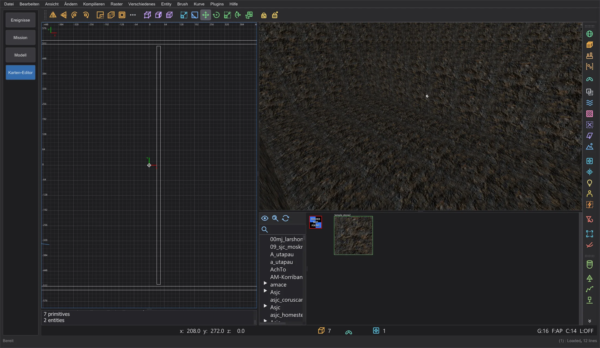

Karte und Szene
Karten-Editor: Unterschiede zu NetRadiant-Custom
Der Karten-Editor folgt NetRadiant-Custom 20260114 in Aussehen und Bedienung. Bekannte Fehler von NetRadiant-Custom, Xonotic NetRadiant, GtkRadiant und q3map2 wurden einzeln geprüft: was JK Studio anders macht und was absichtlich bleibt wie in NetRadiant-Custom.
Eigene Bedienung (nicht in NetRadiant-Custom)#
- Menüs im Stil von JK Studio. Die Menüleiste und alle Menüs des Karten-Editors sehen aus wie die Menüs im übrigen Programm. Einträge, Reihenfolge, Untermenüs, Haken, Tastenkürzel, die Mnemonik-Tasten und die Wirkung jedes Eintrags sind die von NetRadiant-Custom. Preferences > Interface > Menüs wie NetRadiant-Custom holt das Aussehen von NetRadiant-Custom zurück.
- Programm-Einstellungen in View. Am Ende von Ansicht: Zielspiel, Farbgebung, Sprache, Bedienoberfläche skalieren und Knopfgröße der Werkzeugleisten - mit derselben Wirkung wie im View-Menü des Programms. Sprache, Farbschema und Skalierung bleiben auch am Ende von Verschiedenes.
- Knopfgröße der Werkzeugleisten. Klein, Normal (wie NetRadiant-Custom) oder Groß für Haupt-, Filter- und Plugin-Leiste, unter Preferences > Interface und in Ansicht > Knopfgröße der Werkzeugleisten. Sie gilt sofort und wird gespeichert; die Ansichten rücken mit den Leisten nach.
- Strg + Mausrad skaliert im Karten-Editor nicht das Programm: wie in NetRadiant-Custom gehört das Rad den Ansichten (zoomen in 2D, fahren in der Kamera, rollen im Texturbrowser), auch mit Strg. Die Skalierung steht in Ansicht > Bedienoberfläche skalieren.
- Fenstertitel. Im Karten-Editor zeigt der Titel die Karte und ein
*bei ungespeicherten Änderungen, wie in NetRadiant-Custom. - Eigene Bau-Funktionen. Das Fenster Baufortschritt mit der Restzeit, Teil-Kompilierung: VIS wiederverwenden und Teil-Kompilierung: Licht wiederverwenden, Zur fertigen Karte hinzufügen (Karten-Editor: Bau-Fortschritt und Teil-Kompilierungen), Editor-Daten behalten, misc_model aus der Geometrie zurückgewinnen und Lichter schätzen (experimentell) (Editor-Daten behalten) - jede mit eigenem Menüeintrag oder eigener Option und dem Hinweis „nicht in NetRadiant-Custom“. bhed_q3map2 hat dafür die Schalter
-bhedvisreuse,-bhedlightcacheund-bhedmodels; ohne sie baut es wie vorher. - Eigene Editor-Werkzeuge (Stufe 8b). Split-Fenster frei belegen für das Split-Layout, Im Editor spielen (F6), Logik-Ansicht, Ansichtsmodi der Kamera, Spiegel-Modus und Undo-Verlauf (Karten-Editor: Terrain, Spielen, Logik, Spiegel und mehr) - jedes mit eigenem Menüeintrag oder eigener Option und dem Hinweis „nicht in NetRadiant-Custom“, alle vorgegeben aus. Der Terrain Generator stammt aus dem Quelltext von NetRadiant-Custom nach dem Release 20260114; sein fester Startwert ist eine eigene Ergänzung. misc_model aus der Geometrie zurückgewinnen sucht mit einem zwischengespeicherten Modell-Index in allen Modellordnern. bhed_q3map2
-light -bhedgpurechnet die Schattentests auf der Grafikkarte mit Byte-gleichem Ergebnis, bleibt aber aus (auf dem gemessenen Rechner kein Gewinn).






Editor: behobene Fehler#
| Meldung | NetRadiant-Custom | JK Studio |
|---|---|---|
| NRC#65 | Nach dem Verlassen des Ecken- oder Kantenmodus bleiben die Teile gewählt; der nächste Zug verformt den Pinsel. | Beim Verlassen des Ecken- oder Kantenmodus werden dessen Teile abgewählt. |
| NRC#302, GL#206 | Fasen- und umgekehrte Fasen-Kappen erzeugen je nach Ausrichtung zwei entartete Patches. | Die Richtung der Kappe wird nach Größe und Form gewählt; jede Kappe hat eine Fläche. |
| NRC#130 | Ein Pfad mit Umlauten oder anderen Nicht-ASCII-Zeichen: die Karte öffnet nicht, die Einstellungen gehen kaputt. | Editor und bhed_q3map2 kommen mit jedem Pfad zurecht (etwa C:\Users\Jörg\...). |
| NRC#164 | Speichern mit relativem Engine-Pfad (../../Academy/) löst eine Assertion aus. | Pfade werden beim Setzen absolut gemacht. |
| NRC#213 | AutoCaulk scheitert mit "reading ..._ac.caulk failure" ohne Grund. | Die Konsole zeigt die Ausgabe von q3map2 und den Grund. |
| NRC#145 | Mit den Shadern von Jedi Academy setzt AutoCaulk das nicht feste system/nodraw auf feste Pinsel und nimmt watercaulk, das es dort nicht gibt. | Die Namen aus system.shader von Jedi Academy und Jedi Outcast: nodraw_solid, caulk_water, caulk_lava, caulk_acid; ein Shader, den das Spiel nicht hat, bleibt weg. AutoCaulk ruft q3map2 mit dem Spiel des Editors auf (-game ja/jk2). |
| NRC#261 | Der Surface Inspector zeigt nicht normierte BP-Verschiebungen aus anderen Editoren als Grenze des Spinners (8192); ein Pfeil oder Enter verschiebt dann die Textur. | Außerhalb des Spinner-Bereichs wird der Wert um ganze Kacheln verkürzt angezeigt - gleiche Lage; die .map bleibt, bis ein Wert gesetzt wird. |
| NRC#279 | Kappen gehen nur für bestimmte Patch-Größen; die Konsole sagt das nur auf Englisch. | Dieselbe Grenze (Absicht); unter der englischen Zeile nennt ein Hinweis in der Programmsprache, welche Größe jede Kappe braucht. |
| NRC master | Textfehler, die nach dem Tag 20260114 behoben wurden (bobToolz Door Builder "East - West", "Distance Multiplier"). | Übernommen. |
Bei der Prüfung gefunden
- Eine Textur im Texturbrowser zu wählen, setzt sie jetzt wirklich als Shader neuer Pinsel (sie wurde nie gespeichert).
- Der Zustand des Tag-Fensters wurde doppelt gespeichert und ging verloren; der Knopf Zurücksetzen der Einstellungen tat nichts.
- Jeder Menüeintrag, Knopf, jede Taste und jedes Feld wurde auf seine Wirkung geprüft; jeder Befehl, der die Karte ändert, lässt sich Byte für Byte rückgängig machen und wiederholen.
bhed_q3map2: behobene Fehler und gewollte Abweichungen der Ausgabe#
| Meldung | NetRadiant-Custom | JK Studio |
|---|---|---|
| Tester (Stage 7) | -convert (File > Open .bsp) schreibt hint-, areaportal- und skip-Brushes von Jedi-Academy-, Jedi-Outcast- und SoF2-Karten als detail: in diesen Spielen hat "structural" kein Inhaltsflag, die Prüfung auf durchsichtige structural-Brushes greift nie. | Die Compile-Flags der Shader entscheiden wie beim Bauen (q3map_structural / surfaceparm structural): solche Brushes kommen structural zurück, wie in der Quellkarte. |
| GL#173 | Nicht deterministisch: jeder Bau schreibt eine andere .bsp (Shader-Zeiger als Sortierschlüssel, nicht belegte Lightmap-Koordinaten, Thread-Rennen in -vis und -light); die Namen erzeugter Stil-Shader ändern sich bei jedem Bau. | BSP- und Lichtstufe ergeben für dieselbe Karte jedes Mal dasselbe, mit beliebig vielen Threads gleich einem Bau mit einem Thread; mit einem Thread bleibt -light Byte für Byte wie bei NRC. Die Sichtstufe ist wie in NRC: mit einem Thread immer gleich, mit mehreren Threads kann ihr Ergebnis von Bau zu Bau etwas abweichen. |
| NRC#101 | Dirtmapping (-dirty) dunkelt Flächen neben dem Himmel ab, als wäre der Himmel eine Wand. | Ein Dirt-Strahl, der die Karte durch den Himmel verlässt, dunkelt nicht ab. |
| NRC#102, GL#154 | Ein Kartenname mit Punkt (test.q3, foo_0.1) ohne .map verliert den Teil hinter dem Punkt. | Ersetzt werden nur die eigenen Endungen von q3map2 (der Editor übergibt ohnehin immer volle Pfade). |
| PR #316 | Speicherfehler: eine Pinselseite ohne Ebene liest mapplanes[-1]; ein Deluxel-Verweis ohne Deluxemap. | Behoben (geprüft mit AddressSanitizer und UBSan über die Regressionskarten und alle dekompilierten Karten der drei Spiele); die Ausgabe bleibt gleich. |
| PR #316 | Dünne Pinselteile unter einer Kubikeinheit werden verworfen; eine kreuzende Fläche schmaler als 0,2 Einheiten verschwindet; Flächen fast in der Ebene einer anderen Fläche werden nicht gezeichnet; Pinsel mit kleinem Querschnitt werden nicht geteilt, ein Teil von ihnen hat dann keine Kollision. | Die fünf Fixes des Pull-Requests dafür sind übernommen - jeder einzeln an den Originalkarten von Jedi Academy und Jedi Outcast geprüft: keine Karte wurde schlechter. Nicht übernommen: Portale nur noch verwerfen, wenn sie entartet sind - damit lecken 42 von 106 Originalkarten (schmale Spalten, die NetRadiant-Custom schließt). |
| ASan, UBSan | Abstürze oder undefiniertes Verhalten bei kaputten Kartendateien (gar keine Entity, ein Anführungszeichen als letztes Zeichen, riesige Zahlen) und beim Unterteilen von Patches für die Lightmaps. | Gefunden, indem bhed_q3map2 unter AddressSanitizer und UBSan über 300 absichtlich kaputte Karten und die Originalkarten lief; behoben. Eine Karte ohne Entities bekommt jetzt eine klare Fehlermeldung. Die Ausgabe gültiger Karten bleibt Byte für Byte gleich. |
| Decimal | (Editor) Zahlen ab etwa 1e10 werden beim Speichern abgeschnitten; aus 1e20 wird 1. | Der Wert bleibt erhalten (gefunden mit dem neuen Fuzzer für kaputte Kartendateien); gewöhnliche Koordinaten werden genau wie vorher geschrieben. |
Eine mit bhed_q3map2 gebaute .bsp unterscheidet sich deshalb von einer mit dem q3map2 von NetRadiant-Custom gebauten in der Reihenfolge der Flächen und der Belegung der Lightmaps - nicht in der Geometrie. Das q3map2 von NetRadiant-Custom schreibt selbst nie zweimal dieselbe Datei.
Vorschau wie im Spiel#
| Meldung | NetRadiant-Custom | JK Studio |
|---|---|---|
| OpenJK#1358 | (Engine) Ein misc_model_static, dessen Prüfpunkt origin + (0 0 zoffset+1) im Festen liegt, wird nie gezeichnet. | Die Vorschau "wie im Spiel" zeigt es ebenfalls nicht, und der Optimierer bietet den zoffset an, der es zurückholt (Karten-Editor: Optimierer und Grenzen). |
| JKHub | (Spiel) Lichtstile: nach Änderungen an Entities schalten schaltbare Lichter (mit targetname) die falschen Lichter - -onlyents nummeriert die Stile neu, die Lightmaps behalten die alten. | Nur Entities aktualisieren verweigert, wenn die schaltbaren Lichter von der Original-.bsp abweichen, und verlangt einen vollen Bau (Karten-Editor: fertige Karten öffnen und ändern). |
Wie in NetRadiant-Custom belassen#
- Kamera in einem Brush (Stufe 7): Rückseiten werden verworfen, ein Brush, in dem man steht, verschwindet also - außer sein Shader sagt
cull none,cull twosidedodercull disable(Nebelvolumen, Glas, Wasser); dann bleiben seine Wände von innen sichtbar, wie in NetRadiant-Custom (renderstate.cpp OpenGLShader::construct, shaders.cppcull). - NRC#281: Strg+K zu mehreren Zielen vergibt denselben targetname - wie in NRC.
- NRC#132: Ein Region-Bau leckt, wenn die Region keine Entities hat und die Kamera in einem Pinsel steht - wie in NRC; JK Studio warnt vor so einem Bau.
- NRC#48: Externe Lightmaps zusammen mit Lichtstilen gehen in RBSP (Jedi Academy, Jedi Outcast) nicht - eine Grenze des Formats; Build-Menü und Optimierer verweigern die Kombination und nennen den Ausweg.
- GL#189, NRC#144: Flächenlichter unter einem Boden scheinen wegen des Backsplash hindurch - wie in NRC; der Optimierer findet solche Lichter (Karten-Editor: Optimierer und Grenzen).